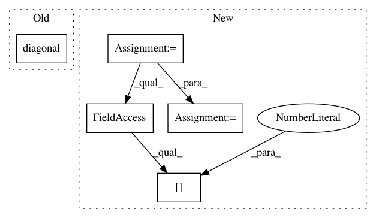

186feb45a1efd801b7ca931d3ca519df4b51c21f,GPy/likelihoods/gaussian.py,Gaussian,d3logpdf_dlink3,#Gaussian#Any#Any#Any#,181
Before Change
:rtype: Nx1 array
assert np.asarray(link_f).shape == np.asarray(y).shape
d3logpdf_dlink3 = np.diagonal(0*self.I)[:, None]
return d3logpdf_dlink3
def dlogpdf_link_dvar(self, link_f, y, extra_data=None):
After Change
:rtype: Nx1 array
assert np.asarray(link_f).shape == np.asarray(y).shape
N = y.shape[0]
d3logpdf_dlink3 = np.zeros((N,1))
return d3logpdf_dlink3
def dlogpdf_link_dvar(self, link_f, y, extra_data=None):
In pattern: SUPERPATTERN
Frequency: 3
Non-data size: 5
Instances
Project Name: SheffieldML/GPy
Commit Name: 186feb45a1efd801b7ca931d3ca519df4b51c21f
Time: 2014-02-07
Author: alan.daniel.saul@gmail.com
File Name: GPy/likelihoods/gaussian.py
Class Name: Gaussian
Method Name: d3logpdf_dlink3
Project Name: geomstats/geomstats
Commit Name: acc1040a3cb4d60949c9b9873604906dcd8a4568
Time: 2020-02-25
Author: nicolas.guigui@inria.fr
File Name: geomstats/geometry/connection.py
Class Name: Connection
Method Name: _pole_ladder_step
Project Name: geomstats/geomstats
Commit Name: fe5998ffdba2a6369a064b1edd036a451c1ff09d
Time: 2020-02-29
Author: nicolas.guigui@inria.fr
File Name: geomstats/geometry/connection.py
Class Name: Connection
Method Name: _pole_ladder_step